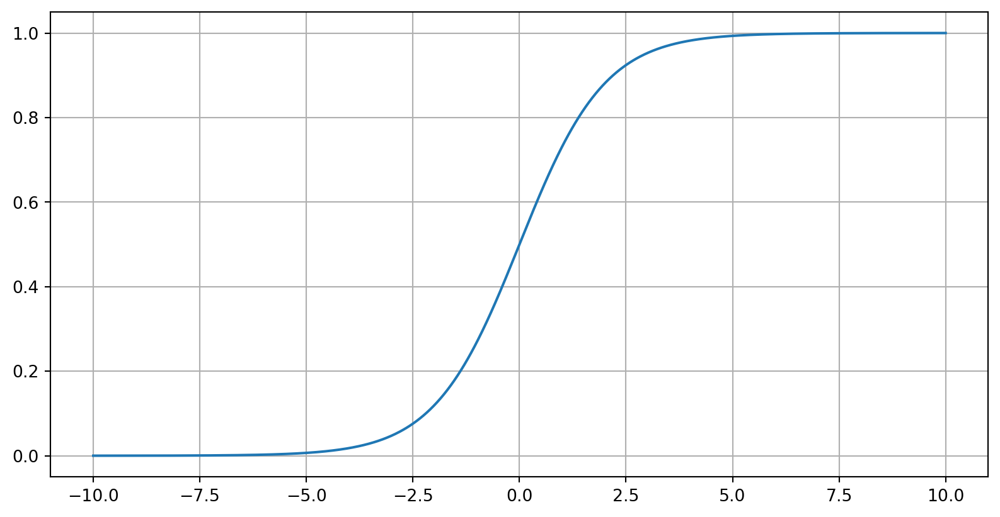
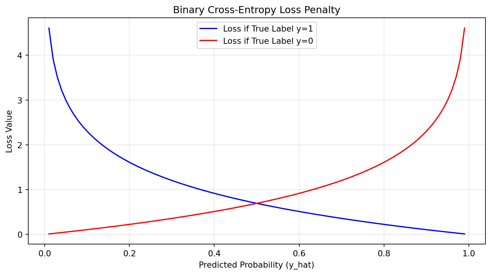

Khiem Nguyen
Lecturer in Multiscale Materials
khiem.nguyen@glasgow.ac.uk
In regression, we predict continuous values. In classification, we predict discrete labels (categories).
We still use a linear base \(\mathbf{z} = \mathbf{X}\mathbf{w} + b\), but we apply an activation function to map results to probabilities.
To squash the linear output \(z\) into a range between 0 and 1, we use the Sigmoid (Logistic) function:
\[\sigma(z) = \frac{1}{1 + e^{-z}}\]
The model prediction becomes: \[\hat{y} = \sigma(\mathbf{w}^\top \mathbf{x} + b)\]
We cannot use MSE for classification because the output is a probability. Instead, we use Binary Cross-Entropy (BCE):
\[\mathcal{L}(\mathbf{w}, b) = -\frac{1}{n} \sum_{i=1}^{n} \left[ y^{(i)} \log(\hat{y}^{(i)}) + (1 - y^{(i)}) \log(1 - \hat{y}^{(i)}) \right]\]
Surprisingly, the gradient of the BCE loss with respect to the weights looks identical to the Linear Regression gradient:
\[\nabla_{\mathbf{w}} \mathcal{L} = \frac{1}{n} \mathbf{X}^\top (\hat{\mathbf{y}} - \mathbf{y})\]
The difference lies entirely in how \(\hat{\mathbf{y}}\) is calculated (using the Sigmoid function).
# %%
import torch
import torch.nn as nn
import matplotlib.pyplot as plt
# %% [markdown]
# Section 1: Manual Calculation of BCE Loss
# This helps understand what happens "under the hood."
# Formula: L = -[y * log(y_hat) + (1 - y) * log(1 - y_hat)]
# %%
def manual_bce(y_pred, y_true):
# We add a tiny epsilon to avoid log(0) which results in NaN
epsilon = 1e-15
y_pred = torch.clamp(y_pred, epsilon, 1 - epsilon)
loss = -(y_true * torch.log(y_pred) + (1 - y_true) * torch.log(1 - y_pred))
return loss.mean()
# Test data: 4 samples
y_true = torch.tensor([1.0, 0.0, 1.0, 0.0])
y_pred = torch.tensor([0.9, 0.1, 0.4, 0.8]) # High error on the last two
print(f"Manual BCE Loss: {manual_bce(y_pred, y_true).item():.4f}")
# %% [markdown]
# Section 2: PyTorch Implementation (Standard)
# Subsection 2.1: Using nn.BCELoss
# This requires the input to already be passed through a Sigmoid function.
# %%
bce_criterion = nn.BCELoss()
loss_pytorch = bce_criterion(y_pred, y_true)
print(f"PyTorch BCELoss: {loss_pytorch.item():.4f}")
# %% [markdown]
# Subsection 2.2: Using nn.BCEWithLogitsLoss (Recommended)
# This is more numerically stable. it takes "logits" (raw scores)
# and applies Sigmoid internally.
# %%
# Raw scores (logits) before sigmoid
logits = torch.tensor([2.197, -2.197, -0.405, 1.386])
# Note: sigmoid(2.197) is approx 0.9
bce_logits_criterion = nn.BCEWithLogitsLoss()
loss_logits = bce_logits_criterion(logits, y_true)
print(f"PyTorch BCEWithLogitsLoss: {loss_logits.item():.4f}")
# %% [markdown]
# Section 3: Visualizing the Penalty
# This plot shows how the loss increases as the prediction gets "more wrong."
# %%
predictions = torch.linspace(0.01, 0.99, 100)
target_is_one = -torch.log(predictions)
target_is_zero = -torch.log(1 - predictions)
plt.figure(figsize=(10, 5))
plt.plot(predictions, target_is_one, label="Loss if True Label y=1", color="blue")
plt.plot(predictions, target_is_zero, label="Loss if True Label y=0", color="red")
plt.title("Binary Cross-Entropy Loss Penalty")
plt.xlabel("Predicted Probability (y_hat)")
plt.ylabel("Loss Value")
plt.legend()
plt.grid(True, alpha=0.3)
plt.show()Manual BCE Loss: 0.6841
PyTorch BCELoss: 0.6841
PyTorch BCEWithLogitsLoss: 0.6840
For binary classification, we typically use a threshold (usually 0.5) to assign a class:
The boundary \(\mathbf{w}^\top \mathbf{x} + b = 0\) is where the model is uncertain.
When we have \(K > 2\) classes, we need \(K\) separate linear outputs (logits), one for each class:
\[ \mathbf{z} = \begin{bmatrix} z_1 & z_2 & \cdots & z_K\end{bmatrix} \]
We need these values to:
The Softmax function generalizes the Sigmoid for multiple outputs:
\[\text{Softmax}(z_i) = \frac{e^{z_i}}{\sum_{j=1}^{K} e^{z_j}}\]
Each output \(\hat{y}_i\) represents the probability that the input belongs to class \(i\).
For \(K\) classes, the loss function \(\mathcal{L}\) sums the negative log-probability of the correct class:
\[\mathcal{L} = -\frac{1}{n} \sum_{i=1}^{n} \sum_{k=1}^{K} y_k^{(i)} \log(\hat{y}_k^{(i)})\]
Where \(y_k\) is a One-Hot Encoded vector (e.g., \([0, 0, 1]\) for the third class).
To use Cross-Entropy, we transform labels into vectors:
The loss only penalizes the prediction for the “True” index.
Even in the multi-class case with Softmax, the gradient for the weight matrix \(\mathbf{W}\) remains elegant:
\[\nabla_{\mathbf{W}} \mathcal{L} = \frac{1}{n} \mathbf{X}^\top (\hat{\mathbf{Y}} - \mathbf{Y})\]
Note that \(\mathbf{W}\) is now a matrix of shape \((d \times K)\) and \(\mathbf{Y}\) is an \((n \times K)\) matrix.
In PyTorch, we often use nn.CrossEntropyLoss().
Important Note: This function combines LogSoftmax and NLLLoss (Negative Log Likelihood) into one step for better numerical stability. You do not need to add a Softmax layer at the end of your model when using this loss.
| Feature | Binary | Multi-class |
|---|---|---|
| Activation | Sigmoid | Softmax |
| Loss | Binary Cross-Entropy | Categorical Cross-Entropy |
| Output | Single value [0, 1] | Vector summing to 1.0 |
| Tool | nn.BCELoss |
nn.CrossEntropyLoss |